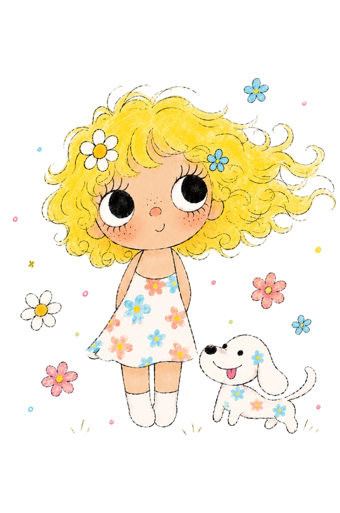

从测绘出发，
向游戏走去。
跨专业不是一次突然的转向，而是一连串好奇、实践与选择的结果。这里记录我如何认识 Unity，也介绍屏幕之外的我。
WHO I AM
个人介绍

HELLO, I AM JIALI.
我享受把复杂问题
一点点弄明白的过程。
我是涂佳利，一名从测绘工程走向 Unity 客户端开发的本科生。作为 INTP，我习惯先理解问题的结构，再专注地把它做完整。
生活里的我随和、亲切，喜欢听不同的想法；进入工作状态后，我会认真对待每个承诺，主动跟进细节，也愿意为最终结果负责。
愿意沉下心钻研，也能长时间保持投入。
尊重不同观点，重视清晰、舒服的协作。
把事情收好尾，比只完成“差不多”更重要。
- 独立游戏体验不循常规的表达
- 滑板在一次次练习里找到平衡
- 徒步用脚步重新感受空间
- 旅行去陌生地方收集新视角
MY JOURNEY
个人经历
NOT A STRAIGHT LINE.
一条并不笔直，
却越来越确定的路。
从测绘工程、AI 手语、虚拟仿真，到 VR、Game Jam 与游戏开发实习，每一步都让我更确定自己想把 Unity 作为长期方向。
查看完整简历 ↗-
01
非计算机专业，也有扎实的编程入口。
我的本科专业是测绘工程。课程中的计算机图形学、数据结构与算法、C# 面向对象程序设计，以及三维建模与可视化，为后来学习实时交互开发打下了基础。
-
02
第一次接触 Unity，来自一个真实问题。
大一下学期，我跟随导师参与 AI 手语项目：将机器学习与穿戴设备采集的手语数据，通过骨骼绑定驱动 Unity 数字人，再由数字人完成手语表达。这段经历让我系统接触 Unity，也带来了国家三等奖与软件著作权成果。
-
03
兴趣与专业方向，在 Unity 这里交汇。
游戏行业本身吸引我，而测绘专业也延伸到数字孪生、虚拟仿真等方向。两条线索在 Unity 上相遇，让我决定继续精进：从引擎基础、交互逻辑到项目工程化，逐步建立自己的能力体系。
-
04
当虚拟世界变得可进入，我看见了更多可能。
一次偶然接触 VR 设备后，我开始尝试相关项目，并在多项数字化与创新设计比赛中获得奖项。比赛让我学会在有限时间里定义问题、组织协作，也把想法真正落成可体验的作品。
-
05
从“感兴趣”，走到认真选择这条路。
后来，我报名系统性的 Unity 游戏开发课程，参加多次 21 天 Game Jam，并利用暑假进入游戏公司实习。项目、比赛与真实团队协作让我最终下定决心：把游戏客户端开发作为长期职业方向。
如果你也在做
有意思的游戏，
欢迎来聊聊。
校招机会、项目交流，或只是分享一款最近喜欢的独立游戏，都可以找到我。
JIALI TU · UNITY CLIENT DEVELOPER · 2026